Education
We train farms and civil society in the regenerative paradigm and its practices.
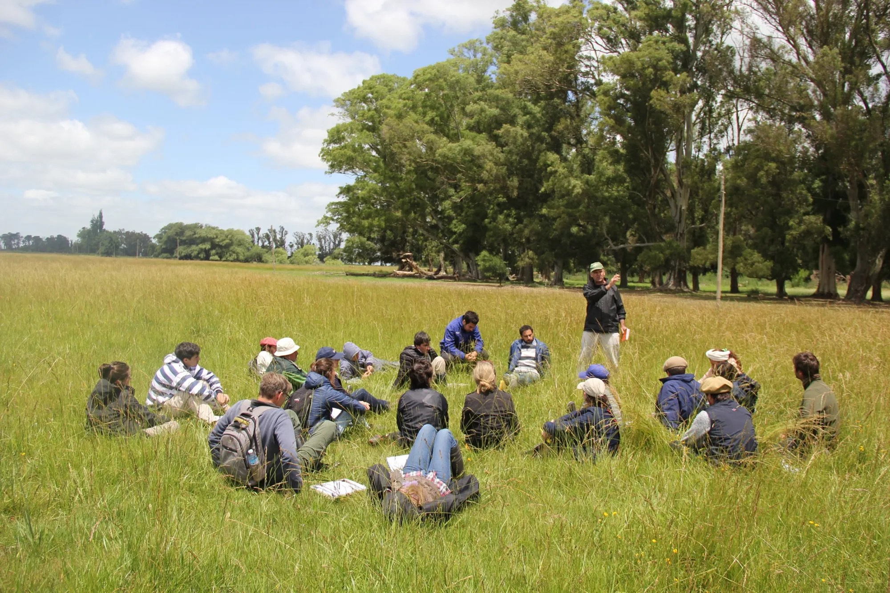
We envision regenerative production as a real, lasting change. We support it with a cultural shift inside and beyond the farm gates.
We work on three fronts so that change doesn't depend on technique alone, but on the people and communities who make it possible.
We train farms and civil society in the regenerative paradigm and its practices.
We create connections between countryside and city, regenerative and conventional producers, the private sector and institutions.
We measure the social impact of farms, inside and beyond the gates.
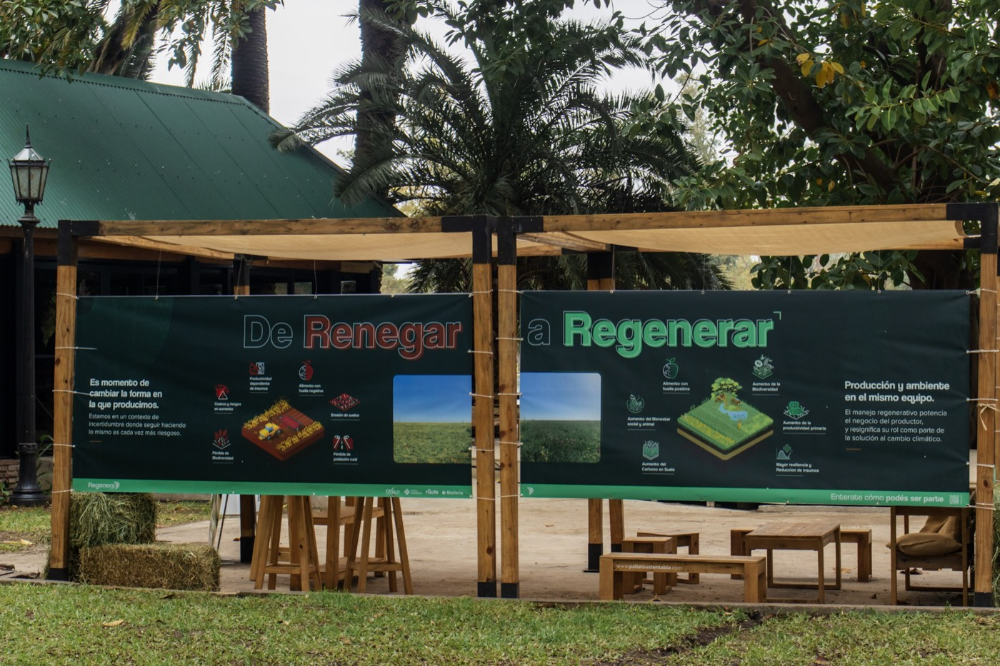
From rural schools to the region's landmark gathering: each program builds the social layer from a different place.
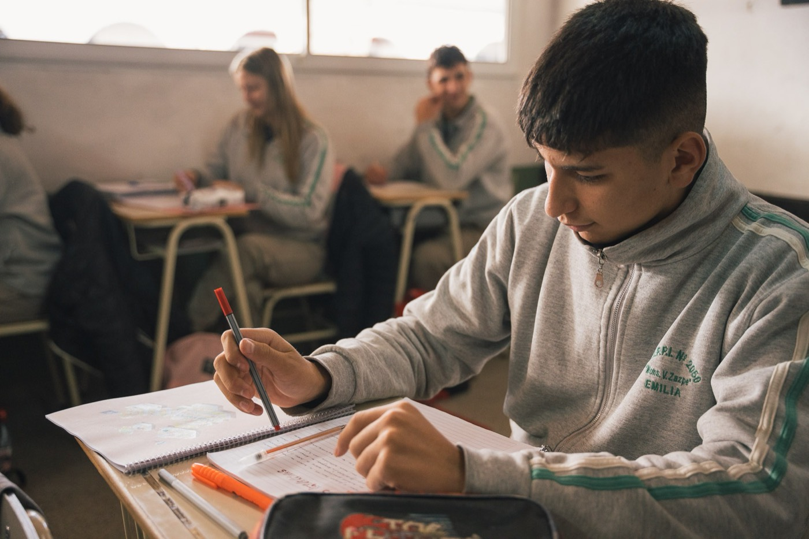
EducationThe educational program bringing regenerative agriculture and livestock farming to agrotechnical schools, training the young people who will lead the productive transition.
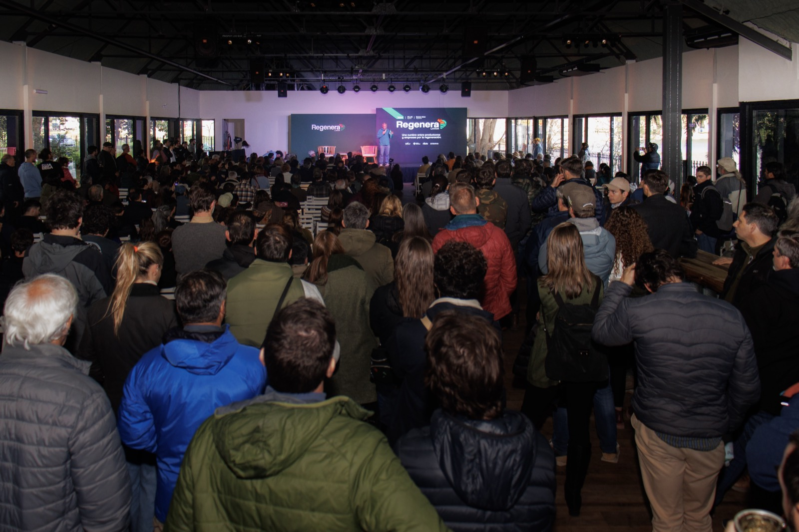
OutreachLatin America's landmark regenerative production summit: producers, companies and institutions from across the continent, in one place.
The foundation was born from the ecosystem that has been regenerating grasslands in South America for over two decades: Ovis 21, Ruuts, Escuela de Regeneración and the Savory network. That journey taught us something simple: technique alone is not enough. Without trained people, connected communities and trust you can measure, regeneration doesn't thrive. Fundación Regenera exists to build that layer.
Founding team
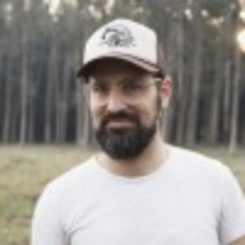
FBFounding team
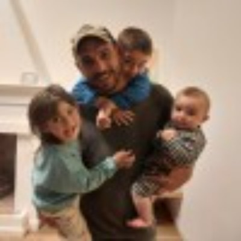
TFFounding team
Semilla Regenerativa Coordinator
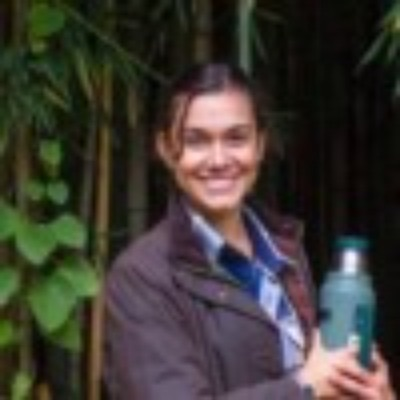
FVEducation Coordinator
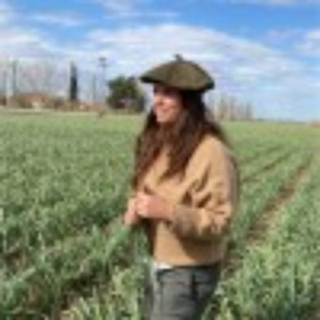
ELAdvisor
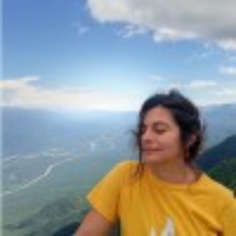
LSTeam
Companies, foundations and movements across the region are pushing this transition alongside us.
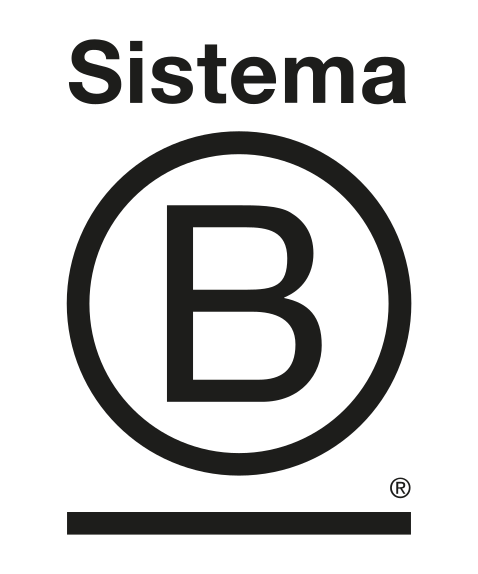
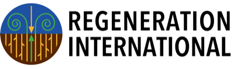
Jornaderos AgroThere's a place for you in this transition. Tell us who you are and we'll show you the way.
Sponsor Regenera LATAM, sponsor a Semilla school, or bring your brand into the ecosystem.
I want to collaborateIf you teach at or run an agrotechnical school, enrollment is direct.
Enroll my schoolTraining, local Regeneras, and partnerships with municipalities and universities.
Write to us